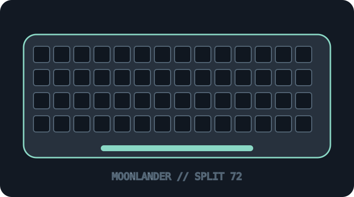

[ KEYBOARDS AND INTEGRATED POINTING DEVICES // IDENTIFIED SKU ]
ZSA Moonlander Mark I
Programmable split ortholinear mechanical keyboard with two USB-connected halves and thumb clusters.

MODEL IDENTIFICATION: Moonlander Mark I ergonomic split keyboard; confirm model generation, switch and keycap kit from its underside/bundle. This archive entry identifies a real manufacturer product/variant; physical labels and dated manuals supersede generalized family descriptions.
Model specifications
| Catalog subcategory | Keyboards and integrated pointing devices |
|---|---|
| Exact model / SKU | Moonlander Mark I ergonomic split keyboard; confirm model generation, switch and keycap kit from its underside/bundle. |
| Layout and key arrangement | 72-key split ortholinear layout with sculpted thumb clusters and removable/adjustable wrist rests; left/right halves can be tented and positioned independently. |
| Switch type / mechanism | MX-style mechanical switches, hot-swappable on supported build; switch choice and keycap configuration are buyer-selectable. Verify socket and installed switch before replacement. |
| Interface and protocol | Wired USB-C from host to keyboard plus 3.5 mm TRRS interconnect between halves; no wireless typing mode. Oryx configures firmware/keymaps, with support dependent on the browser/host. |
| Key rollover / anti-ghosting | ZSA does not publish a numeric key-rollover guarantee on the product page. The keyboard is programmable and uses QMK-derived firmware, but do not infer an NKRO claim without testing the exact firmware/host. |
| External dimensions | Each half is approximately 170 mm wide × 250 mm deep with the thumb wing (170 mm deep without it), and about 30 mm tall including keycaps. Total width varies with the adjustable spacing, tenting and wrist-rest configuration. |
| OS and host compatibility | USB HID basic typing works with compatible Windows, macOS and Linux hosts; keymaps are configured through Oryx. Host-specific modifiers/layers and firmware flashing require the correct layout file and supported browser/USB access. |
| Revision / regional caveat | Moonlander Mark I is distinct from Ergodox EZ and Voyager. Switches/keycaps, tenting angle, thumb cluster options, firmware/keymap, TRRS cable and USB-C cable can differ; avoid hot-plugging the TRRS interconnect while powered. |
Preservation and service notes
Photograph both halves, tenting and keymap; preserve the exact Oryx layout/firmware and TRRS lead with the board. Disconnect USB before changing switches and never attach/detach the TRRS cable while energized.
Record the as-found SKU/revision, host OS and version, connection method, firmware, keymap and test method. Do not infer rollover or compatibility from the connector alone; clearly separate unpublished manufacturer specifications from tested observations.
Manufacturer sources
- ZSA Moonlander Mark I product pageManufacturer product information and configuration options.
- ZSA Moonlander physical dimensionsManufacturer FAQ specifying dimensions of each half, including the removable thumb wing.
- ZSA Oryx configuratorManufacturer keymap and firmware configuration resource.
Manufacturer pages can be revised or retired. Retain the applicable dated manual/specification with the physical equipment record.